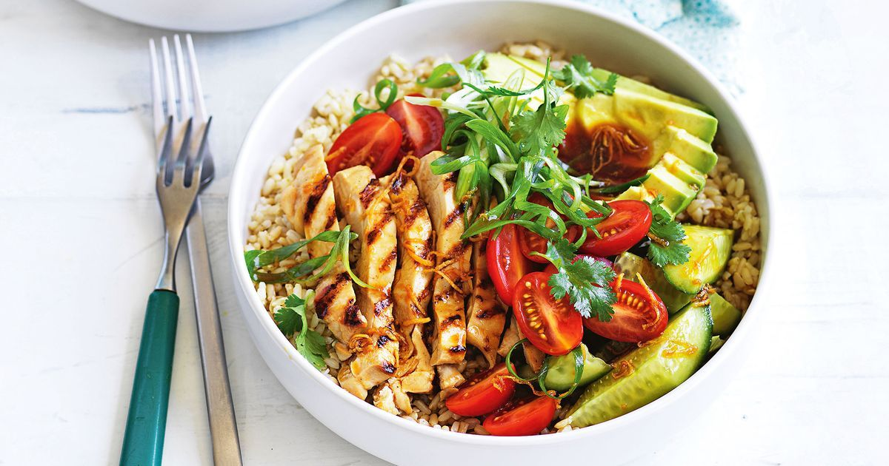

FOODMANIA
Lunch
This weeeks feature lunch is.......CHICKEN W RICE! A warm bowl of decilous to enjoy!
Ingridients (5 serves)
- 5 bone in chicken thigh fillets, peel skin OFF
- 1 chopped onion
- 2 cloves minced garlic
- 2 tbsp butter
- 1 1/2 cups uncooked white rice
- 1 1/2 cups chicken broth/stock
- 1 1/4 cups water
Recipe
- Preheat oven to 180°C/350°F.
- Scatter onion and garlic in a baking dish (about 10 x 15" / 25 x 35 cm), then place butter in the centre. Bake for 15 minutes (check at 12 minutes, mix if some bits are browning too much).
- Meanwhile, mix together Chicken Rub. Sprinkle on both sides of the chicken.
- Remove baking dish from the oven. Then add the rice mix. Place chicken on rice. Then pour chicken broth and water around the chicken.
- Cover with foil, then bake for 30 minutes. Remove foil, spray chicken with oil (optional, gives chicken nicer finish), then bake for a further 20 minutes until liquid is absorbed.
- Stand for 5 minutes, then remove chicken and fluff up rice. Garnish with parsley or thyme if desired, serve and enjoy!
Tips
Made entirely in the oven (no stove!), the rice in this recipe is outrageously delicious! It's buttery and garlicky, tender but not mushy. The secret tip is to briefly bake onion with garlic and butter before adding the rice, liquids and chicken - it adds a great flavour base!

Upcoming Posts

Learn how to make my Homemade Raspberry Sorbet recipe and you'll be enjoying this delightful frozen dessert in just minutes! This cold, refreshing summertime dessert will perfect your summer!

Beef Tacos – the old school way!!! With juicy seasoned beef taco meat and crispy shells, this taco recipe is made with a simple yet flavour packed homemade taco seasoning that truly tastes like store bought.

Learn the secret to making the best homemade French fries from russet potatoes right at home! These are easy to make ahead of time and fry or bake in the oven for a quick snack or side dish idea!
Back to the Top